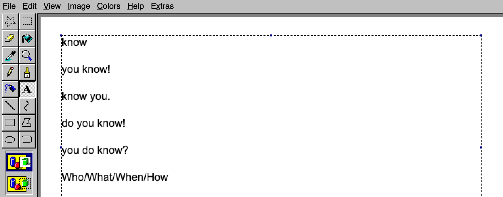
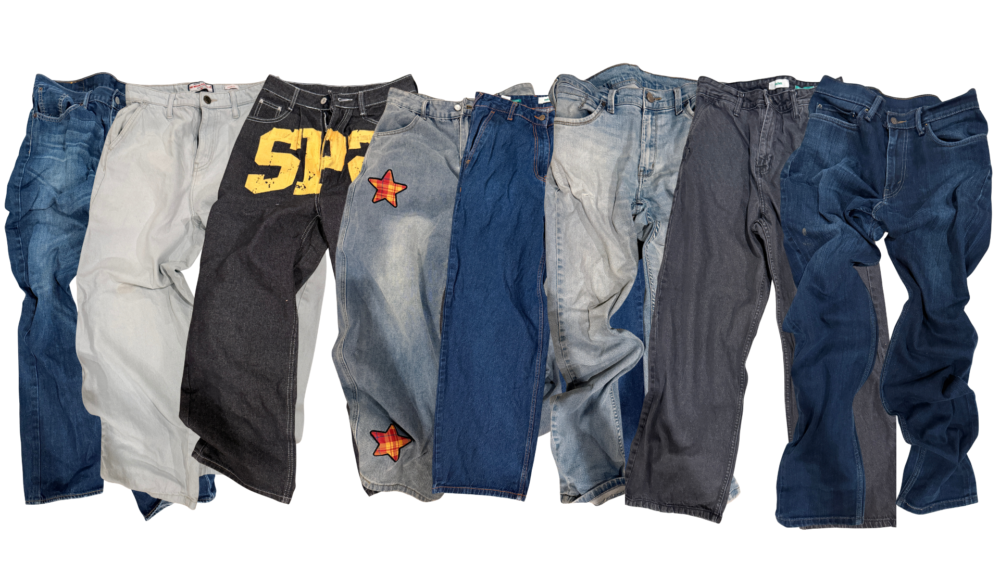

To Know - Paint



Imagine your closet from 30 years ago, how big was it? Not that big, I suppose. In 1990, an average American bought 40 articles of clothing each year. By 2023, that number rose to 65, driven by the West's growing consumerism and its 1.7 trillion dollar fast fashion industry. The massive expansion is directly a reflection of capitalism making a statement in the West, amidst all the economic growth we see on the white papers we see a dark reality that is untalked about. The truth is unheard of, hidden under papers where developing nations endure ecological collapse and labor exploitation, while Environmental, Social, and Governance (ESG) metrics often serve as corporate facades rather than an ask for systemic change, this is how treacherous capitalism and consumerism can be. In this essay, we can analyze how unchecked consumerism, boosted by globalization, entrenches inequality and environmental harm, whilst ESG metrics risk becoming tools for corporations to greenwash investors.
Fast Fashion’s business model is driven by hyper-exploitation to make money, these businesses' cutting corners is reaching the extreme. In Bangladesh, 80% of garment workers are women earning 0.13/hour. The International Labour Organization reported that 68% of Bangladeshi factories lack fire exits, a haunting echo of the 2013 Rana Plaza collapse that killed 1,134 people. Large conglomerates such as Shein and Temu exemplify this negligence: workers in Guangzhou, China report 18-hour shifts to produce 500,000 daily items with a base pay of $556 and a 2-cent commission per item. These unlivable wages and long hours go back to the harsh time of industrialization for workers. The shocks of dropshipping even make economies more vulnerable. One dress shipped from China to the U.S. emits 6.3 kg of CO2, while returns generate 92 million tonnes of textile waste is produced every year. For Indonesia, this is as bad as 7.8 million tons of plastic waste, costing 450 million in tourism and fishing losses. What is termed "growth" and is celebrated in the boardrooms is the ledger of ecological debt in these developing nations.
ESG metrics are often more about ensuring profits than about social equity in their Papers. Although 90% of S&P 500 firms write ESG reports, their commitments mainly contradict the purposes of the reporting which becomes "greenwashing": H&M's Conscious Collection uses 20% more synthetics than the mainline yet sells itself as "eco-friendly". Apple's pledge of being "carbon-neutral" is just another greenwashing scheme, 75.3% of Chinese electricity is produced by coal whilst 95% of Apple’s manufacturing comes from China, being carbon neutral doesn’t just mean in the context of Silicon Valley. When a company has a monopoly manipulating data does not become a hard thing, Amazon's ESG reports do not count warehouse injuries for Bangladesh, where the injury rate of workers is three times more than the global average, and where they were put under the purview of the German Supply Chain Act.
ESG indicators are now a requirement for business profitability and sustainability in all economies. ESG businesses also have revenue growth of 9.7% on average versus 4.5% for non-ESG implementation businesses. ESG businesses also have profit margin growth of as much as 9.1%, with the U.S. being 11%. Further, companies with strong ESG practices access capital more readily: 84% report easier access to capital, referencing the "ESG value premium."
Regional variations indicate the impact of ESG implementation: U.S. firms experience the highest rise in profitability, with European firms benefiting from stringent regulations like the EU Green Deal. In emerging economies, ESG implementation improves a company's reputation and provides access to foreign capital. Productivity and brand loyalty that enable long-term growth are built through successful stakeholder engagement. Though ESG metrics promise much for sustainability and profitability, their utilization as a tool for greenwashing only serves to entrench injustices and environmental degradation emphasizing the need for actual system change and not small changes.
The crises of global consumerism, exploitative capitalism, and fast fashion require system change. Although ESG metrics can encourage equity and sustainability, their use as greenwashing causes greater harm. Genuine change has to come in the form of binding regulation, circular economies, and a new definition of growth, away from exploitative profit towards a system founded on ecological health and social justice.
As we tell millions of kids that education is the great equalizing door, we often neglect to mention that for the vast majority, that door is bolted shut by the weight of history and the geography of their birth. This essay interrogates the staggering reality of global "learning poverty," where seven out of every ten children in developing nations remain unable to read a basic text by the age of ten. a statistic that represents not a failure of the present, but a calculated victory of the past. By tracing the "one, two, three, four, five, six, seven" count of these lost children, the analysis argues that modern educational disparities are the living echoes of colonial-era systems. These systems were never designed to liberate, but to "train and tame" a select elite while intentionally underfunding the masses to ensure a subservient workforce.
The discussion bridges the $65 trillion historical drain of colonial resources with modern-day structural barriers, including the digital divide and international austerity policies that continue to stifle national growth. Central to this critique is the fundamental injustice of "equality" without "equity." Using the personal metaphor of a student unable to read the board without glasses, the paper posits that to judge all children by a singular metric, regardless of their inherent or inherited disparities, is a profound moral failure. It explores how modern institutions turn grades into identities, trapping students in a hierarchy that measures privilege rather than potential. Ultimately, this paper calls for a radical transformation that transcends the mere counting of heads in classrooms. It demands a system that provides the specific "glasses" each unique journey requires, shifting the global focus from the preservation of old hierarchies to the radical pursuit of equity. To fulfill the promise of education, we must stop viewing children as statistics of a broken mirror and start providing the tools necessary for every student to finally see the board and prove their worth.
One, two, three, four, five, six, seven. Today, these numbers represent the growing inequality in education around the world. According to the World Bank (2022), approximately 70% of children in low and middle-income countries experience learning poverty, defined as children under the age of ten who were unable to even read and understand a simple text; not just by percentile, but rather that is seven out of every ten children. When education is referred to as the great equaliser, the reality behind these statistics highlights gaps that point out a contradiction: whether education is bridging a gap or creating a new one.
As education becomes a basic standard in much of Europe and North America, with 98 per cent of adults having some form of schooling, whilst regions in Sub-Saharan Africa and the Middle East still fall behind constantly, with more than 40% of adults not having completed even one year of education. As education for the few evolves through technology and different mediums of learning, access to education is becoming scarce for many. Our responsibility lies in bridging this gap between the highest and the lowest levels of education standards, for us not to give everyone an equal opportunity, but an equitable one, for not everyone has the same journey in their pathway of education. Education inequality persists not only due to the absence of schooling, but also due to access to quality education and opportunities that are unevenly distributed across economic and geographic lines; as a result, for many, education is just a mechanism that reflects global inequality rather than reducing it. Global education requires a transformation, not just a reformation: a system that is designed to give every student an opportunity based on their specific needs. Roots- To understand why education gaps keep widening, it is necessary to examine the origins and onset of economic and geographic instances where opportunities regarding education were first denied. To understand the need for equity, we need to recognise the need behind it. Global education inequality maps mirror maps of the colonial era closely, revealing how radically historic education systems still play a major role in present-day issues. Colonial education systems were not designed to educate all children equally, but rather to train a small subsequent category of elites that were capable of serving the government, limiting access to education for much of the colonised population. Moreover, colonial curricula were structured to reinforce and display European languages, values, and histories while slowly eliminating local cultures and systems. Colonial policymakers such as Thomas Babington Macauly, not a historian, but a authoritative coloniser himself argued for an education system that develops “a class of persons, Indian in blood and colour, but English in taste, in opinions, in morals, and in intellect,” standing as proof that colonial education was designed to train and tame a small group, and not educate the masses.
At the time of independence, fewer than 15 percent of adults in many Sub-Saharan African colonies were reported as totally illiterate, and in most regions, primary school enrollment remained below 20 percent. Although tragic for the colonised, this system ensured the most economic benefits to European powers, vested in preventing widespread education that could quickly foster sentiments of awareness and resistance towards colonial oppression. Colonial education created a long-term obstruction between education and society, whilst destabilising local economies, forcing a constant slave workforce. Even after decades of independece colonization is the primary cause of the wide education gap, creating social, economic, and political constraints, through slavery, laws, and conflicts. UNESCO reports that children in formerly colonised regions are significantly more likely to quit schooling before the age of 10, referencing the long-lasting scar of colonialism etched into every region they oppressed. These hierarchies did not blend into society with independence of these nations; instead, they created an underfunded, unevenly distributed education system.
A growing system of privatised education arose for those with wealth in these countries, but public schools were left relying on funding from a nation that newly gained freedom to their own economy. An astounding mark of modern day equivalent $65 trillion, was roughly sourced out of just India, with researchers saying the actual number could be much higher with all the proposed values from every nation. As European nations expanded compulsory public education throughout the nineteenth and twentieth century, acheiving remarkable numbers of 90 percent literacy rates throughout Europe. As European powers used the very same money from colonialism to fund their development, the colonised were not ignored, but purposefully identified as “low-life humans, worthless of education.” Researchers from the Brookings Instituition specified that this divergence of early education investment created the current persistent gaps in formal literacy, enrollemnt, and learning outcomes that could change the world, dangerously creating the global inequality in education today. These colonial inequalities were further compounded by the effects of post colonial debt crises and international austerity policies that developed in the late twentieth century, which left many of these developing nations unable to educate their own future.
The World Bank data identifies that during the peak of structural and political adjustments in the 1980s and the 1990s, education spending declined in over 30 countries. As geopolitical problems arose, access to education was repeatedly hindered by one's financial standing, reinforcing the same patterns that restricted access established in the colonial era. All these sum up to identify that the education inequality cannot be regarded as a current failure, but as a continuation of historically flawed systems designed to exclude rather than include. The standing of unequal access, underdeveloped quality, and restricted opportunity in most post colonial societies reflect the standing influence of colonial education systems that were intended to function as an aid to the financial growth of Europe and not one that provided equity. This fondation clearly explains why even today nearly 70 percent of children in low and middle income countries still fail to achieve basic literacy by ten, despite the growing understanding of education as a fundamental human right. Regardless of the standing disparity, it is our responsibility to slowly but accurately close the gaps once wrongfully developed.
Let's just assume a student has perfect vision and is easily able to read the board without needing any help, but there's me: on the contrary, I am unable to read the board effectively without glasses. The problem with this is that I did not have a choice to be born with good vision or not, so judging me based on my ability to read without the accommodation of my glasses would be the biggest mark of injustice. This is the modern education system, with one of the biggest problems lying in Equity. To judge every kid on the same metric would not be fair for each and every child due to natural-born disparities. The history of inequality shows the system was built to hold back people. The modern world still faces problems in new ways. Today, unequal access to education is not about school openings or enrollment numbers. Today, unequal access to education comes from status, geography, social identity and policy choices. These differences stay even as global plans call education a right and a path to social growth.
Access is one of the key ways inequality stands through unequal access and quality of education. According to UNESCO, educational inclusion must address not only access to school buildings but also opportunities for meaningful learning, infrastructure, and teacher preparedness that allow every child to thrive regardless of background. The United Nations 2030 Agenda’s Sustainable Development Goals make equity central to global progress, recognising that poor and marginalised children often face cumulative disadvantages that reduce their chances of completing quality schooling.
Nearly 240 million children globally were out of school, with the majority residing in Sub‑Saharan Africa and Asia, where educational access remains highly unequal. These differences not only reflect income disparities but also local social factors like women’s empowerment, where regions with lower female agency show greater educational inequality. Moreover, even where schools exist, access to technology and other learning tools remains uneven. During the COVID‑19 pandemic, disparities in Internet access and e‑learning infrastructure meant that students without connectivity, often the poorest, fell further behind, highlighting how unequal educational resources perpetuate inequality.
Another dimension of inequality lies in inclusive education, the extent to which schooling systems adapt to diverse needs. According to the World Bank, millions of children and youth remain out of school, and many who do attend struggle to progress to higher levels of education. Over 40 per cent of students who begin primary school do not make it to upper secondary level, largely due to structural barriers that disproportionately affect marginalised learners. The system built around inequality often creates an unhealthy hierarchy among students. Instead of measuring growth or individual strengths, it groups students into fixed categories that shape how they’re treated and how they see themselves. Those with higher scores are labelled as “smart” or “advanced,” while others are seen as less capable, even when they may excel in areas the test doesn’t measure. This separation widens the gap between students, encouraging comparison and competition instead of collaboration. In the end, grades stop being feedback and start becoming identities, dividing students based on a number rather than their true potential.
The influence of global wealth distribution also complicates access to education. A UNICEF study highlights that national wealth does not guarantee educational equality, as even rich countries display significant disparities based on factors like parents’ income, migration background, and social status. This underscores that inequalities in education are not only a problem of underdevelopment but a global structural challenge that requires deliberate policy solutions. Addressing these multifaceted challenges requires policy frameworks that prioritise equity, not just equality. UNESCO’s International Observatory on Equity and Inclusion in Education works to develop standards and data to track progress and target interventions effectively, emphasising that marginalised groups, including indigenous peoples, children with disabilities, and those displaced by conflict, must be visible in education planning and measurement.
The seven out of ten children who are lost to learning poverty are not victims of a system. The children survive a system that works exactly as it was made a long time ago. The system excludes children. The system puts children into groups. The system keeps the colonial past. The analysis shows the gap between the 98 per cent literacy in the West and the way Sub‑Saharan Africa and the Middle East are left behind. The gap was not an accident of location. It is a planned result of years of taking resources and a deliberate lack of investment. When we try to measure a student’s ability without looking at the geographic "vision" they were born with, we are not doing education. We are doing an injustice.
The transformation moves beyond the numbers of enrollment and reaches for the radical standard of equity. The transformation does not stop at giving every child a seat in the classroom when the child does not have the glasses to see the board. To close the gap, the global policy must shift from the change of hierarchies to a totally new picture of value that puts the marginalised first, and that sees the national wealth as meaningless if it rests on the intellectual suppression of the many. If we continue to judge students by a singular, rigid metric, we will continue to reflect global inequality, but if we choose to provide the specific accommodations the "glasses" that every unique journey requires, we can finally transform education into the great equaliser it was always promised to be. It is time to stop counting children as statistics and start giving them the chance to prove their worth.
No activities match your search.

No songs match that search.